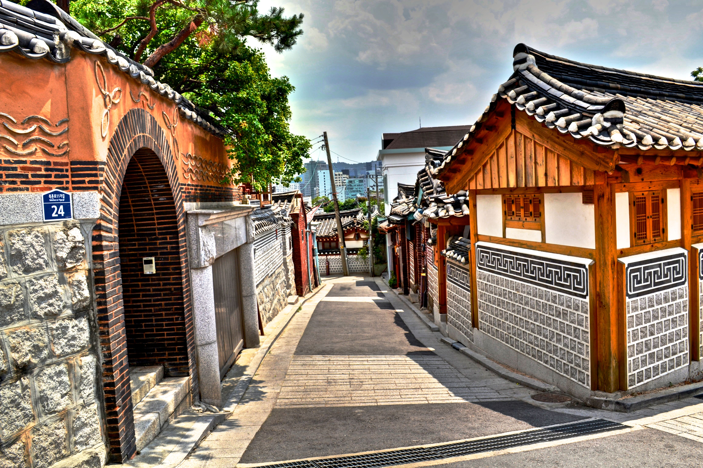

南山塔 盤浦大橋 課程心得

北村的韓屋特點可概括為兩點，即“進化的舊法”和“裝飾化傾向”。 雖然與傳統韓屋相比，未具備完整的品格；如較低的屋頂斜度、圓梁、雙屋簷 但是北村韓屋凝聚著韓屋的結構性和優美。從當時韓屋廣告可以看到 它反映密度和匿名性等城市住宅的要求，且北村的韓屋作為新興城市住宅類型
雖然與傳統韓屋相比，未具備完整的品格；如較低的屋頂斜度、圓梁、雙屋簷
但是北村韓屋凝聚著韓屋的結構性和優美。從當時韓屋廣告可以看到
它反映密度和匿名性等城市住宅的要求，且北村的韓屋作為新興城市住宅類型